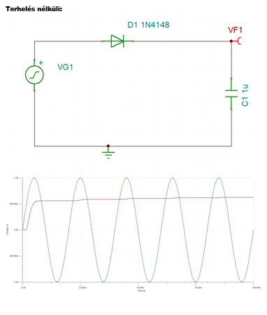

2. Feladat: Egyutas Egyenirányító
Terhelésnélküli Mód
Az egyutas egyenirányító terhelésnélküli üzemmódban működése. Ebben az esetben az áramkör nem terheléshez van csatlakoztatva, így a kimeneti feszültség az elméleti maximumot éri el.
Terhelésnélküli Ismertetése

Terhelésnélküli Kapcsolási Rajz és Diagram

Terheléses Mód
Az egyutas egyenirányító terheléses üzemmódban működése. Terheléshez csatlakoztatva az áramkör másféleképpen viselkedik, a kimeneti feszültség a terhelés nagyságától függ.
Terheléses Ismertetése

Terheléses Kapcsolási Rajz és Diagram